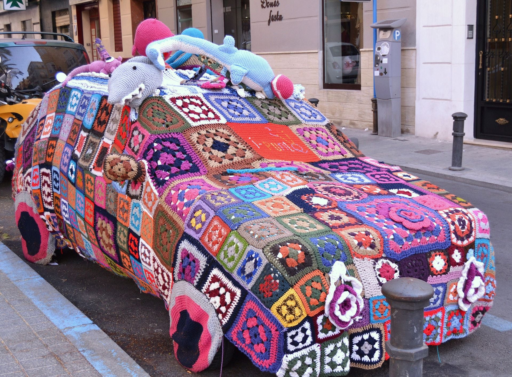
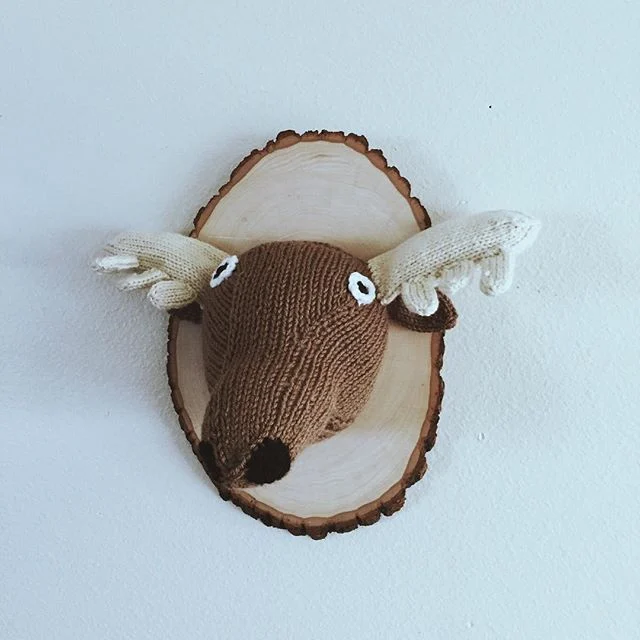
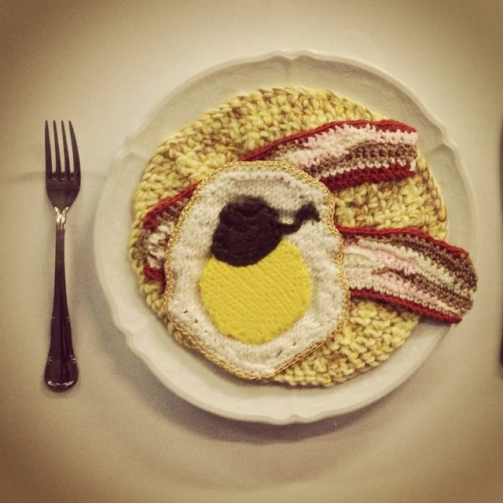

Forget covering your car up with a tarp; this croched cozy makes much more of a statement!
Though I imagine it's not too practical on a rainy day.

Forget covering your car up with a tarp; this croched cozy makes much more of a statement!
Though I imagine it's not too practical on a rainy day.

For those who respect this classic aesthetic but aren't into real taxidermy, why not knit yourself an adorable, humane trophy for the wall?

While I doubt it's quite as tasty as the real thing, this cute handmade breakfast was certainly crafted with love!